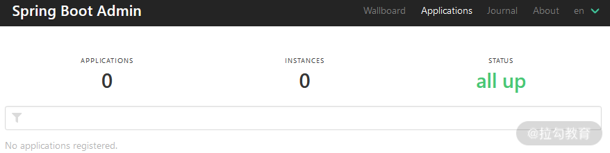
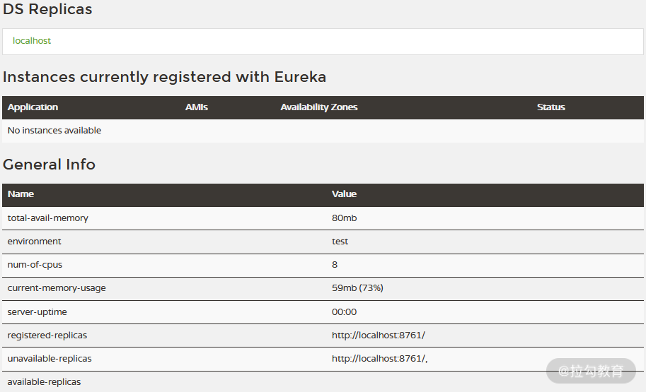
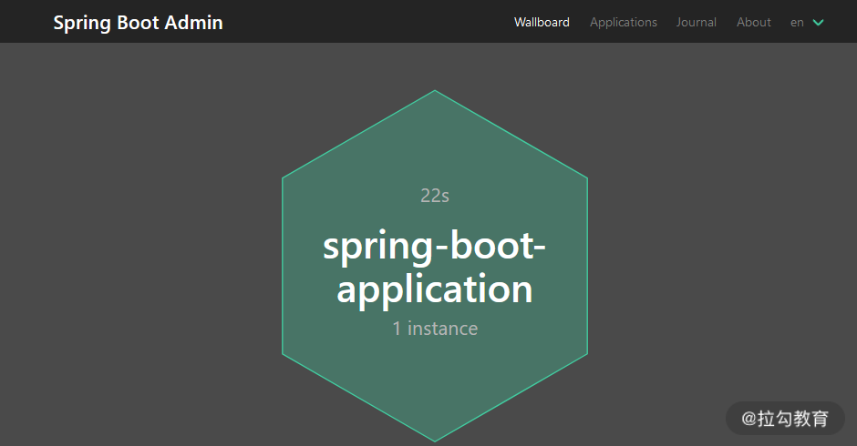
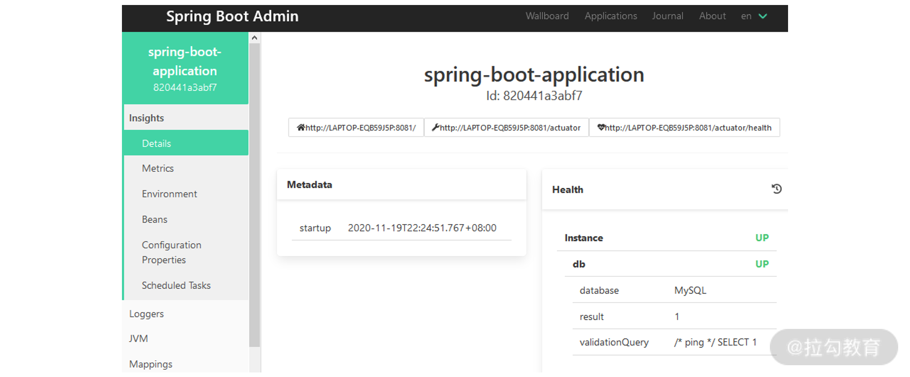
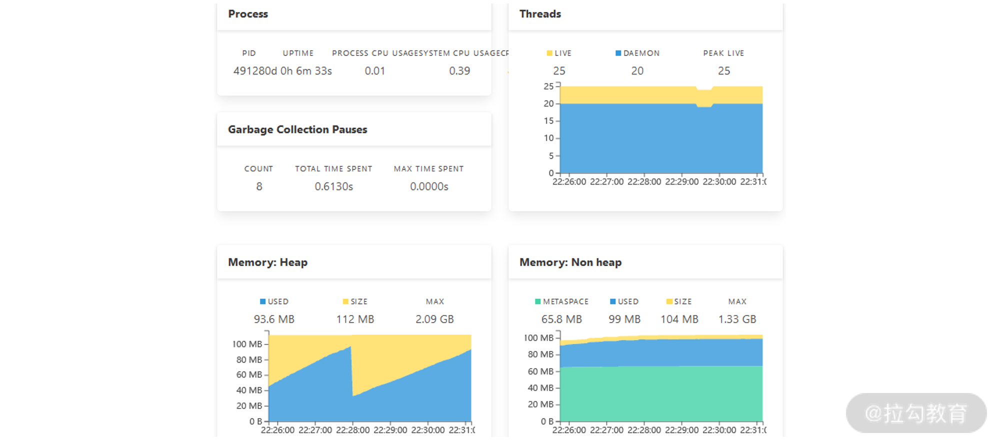
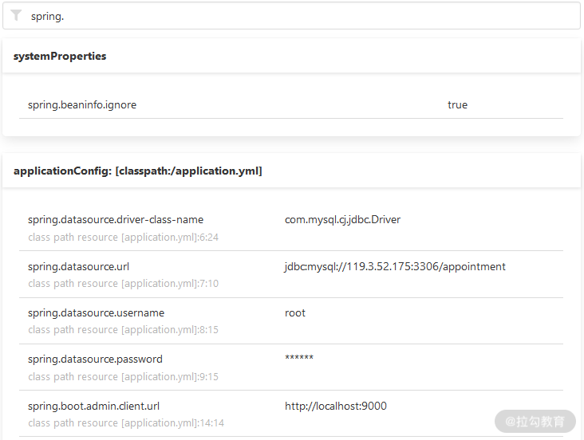

- 00 开篇词 从零开始：为什么要学习 Spring Boot？.md.html
- 01 家族生态：如何正确理解 Spring 家族的技术体系？.md.html
- 02 案例驱动：如何剖析一个 Spring Web 应用程序？.md.html
- 03 多维配置：如何使用 Spring Boot 中的配置体系？.md.html
- 04 定制配置：如何创建和管理自定义的配置信息？.md.html
- 05 自动配置：如何正确理解 Spring Boot 自动配置实现原理？.md.html
- 06 基础规范：如何理解 JDBC 关系型数据库访问规范？.md.html
- 07 数据访问：如何使用 JdbcTemplate 访问关系型数据库？.md.html
- 08 数据访问：如何剖析 JdbcTemplate 数据访问实现原理？.md.html
- 09 数据抽象：Spring Data 如何对数据访问过程进行统一抽象？.md.html
- 10 ORM 集成：如何使用 Spring Data JPA 访问关系型数据库？.md.html
- 11 服务发布：如何构建一个 RESTful 风格的 Web 服务？.md.html
- 12 服务调用：如何使用 RestTemplate 消费 RESTful 服务？.md.html
- 13 服务调用：如何正确理解 RestTemplate 远程调用实现原理？.md.html
- 14 消息驱动：如何使用 KafkaTemplate 集成 Kafka？.md.html
- 15 消息驱动：如何使用 JmsTemplate 集成 ActiveMQ？.md.html
- 16 消息驱动：如何使用 RabbitTemplate 集成 RabbitMQ？.md.html
- 17 安全架构：如何理解 Spring 安全体系的整体架构？.md.html
- 18 用户认证：如何基于 Spring Security 构建用户认证体系？.md.html
- 19 服务授权：如何基于 Spring Security 确保请求安全访问？.md.html
- 20 服务监控：如何使用 Actuator 组件实现系统监控？.md.html
- 21 指标定制：如何实现自定义度量指标和 Actuator 端点？.md.html
- 22 运行管理：如何使用 Admin Server 管理 Spring 应用程序？.md.html
- 23 数据测试：如何使用 Spring 测试数据访问层组件？.md.html
- 24 服务测试：如何使用 Spring 测试 Web 服务层组件？.md.html
- 结束语 以终为始：Spring Boot 总结和展望.md.html
- 捐赠
22 运行管理：如何使用 Admin Server 管理 Spring 应用程序？
前面 2 讲通过引入 Actuator 组件，我们为 Spring Boot 应用程序添加了系统监控功能。基于 Actuator 暴露的各种 HTTP 端点，开发人员可以获取系统的运行时状态。而端点是一种底层的监控技术，这就要求我们对 HTTP 协议和 Spring Boot 应用程序的构建方式有一定的了解。
那么，有没有更简单的、基于可视化的方式获取这些端点背后的信息呢？答案是肯定的。因此，这一讲我们将要介绍 Spring Boot Admin 组件。
引入 Spring Boot Admin 组件
Spring Boot Admin 是一个用于监控 Spring Boot 的应用程序，它的基本原理是通过统计、集成 Spring Boot Actuator 中提供的各种 HTTP 端点，从而提供简洁的可视化 WEB UI，如下图所示：

Spring Boot Admin 基本原理图
从上图中，我们不难看出，Spring Boot Admin 的整体架构中存在两大角色，即服务器端组件 Admin Server 和客户端组件 Admin Client。其中，Admin Client 实际上是一个普通的 Spring Boot 应用程序，而 Admin Server 则是一个独立服务，需要进行专门构建。
接下来，我们先介绍构建 Admin Server 的两种实现方式：一种是简单的基于独立的 Admin 服务；另一种则相对复杂，需要依赖服务注册中心的服务注册和发现机制。
基于独立服务构建 Admin Server
无论使用哪种方式实现 Admin Server，首先我们都需要创建一个 Spring Boot 应用程序，并在 pom 文件中添加如下所示的依赖项：
<dependency>
<groupId>de.codecentric</groupId>
<artifactId>spring-boot-admin-server</artifactId>
</dependency>
<dependency>
<groupId>de.codecentric</groupId>
<artifactId>spring-boot-admin-server-ui</artifactId>
</dependency>
请注意： Spring Boot Admin 组件并不是 Spring 家族官方提供的组件，而是来自一个 codecentric AG 团队。
如果我们想将普通的 Spring Boot 应用程序转变为 Spring Boot Admin Server，只需要在 Bootstrap 类上添加一个 @EnableAdminServer 注解即可，添加完该注解的 BootStrap 类如下代码所示：
@SpringBootApplication
@EnableAdminServer
public class AdminApplication {
public static void main(String[] args) {
SpringApplication.run(AdminApplication.class, args);
}
}
此时，我们会发现使用这种方式构建 Spring Boot Admin Server 就是这么简单。
接下来我们启动这个 Spring Boot 应用程序，并打开 Web 界面，就能看到如下所示的效果：

Spring Boot Admin Server 启动效果图
从图中我们可以看到，目前还没有一个应用程序与 Admin Server 有关联。如果想将应用程序与 Admin Server 进行关联，我们还需要对原有的 Spring Boot 应用程序做一定的改造。
首先，我们在 Maven 依赖中引入对 Spring Boot Admin Client 组件的依赖，如下代码所示：
<dependency>
<groupId>de.codecentric</groupId>
<artifactId>spring-boot-admin-starter-client</artifactId>
</dependency>
然后，我们在配置文件中添加如下配置信息，以便该应用程序能够与 Admin Server 进行关联。
spring:
boot:
admin:
client:
url: http://localhost:9000
注意：这里的 9000 就是 Admin Server 的服务器端口。
现在我们启动这个应用程序，就会发现 Admin Server 中已经出现了这个应用的名称和地址，如下图所示：

Spring Boot Admin Server 添加了应用程序之后的效果图
在图中，我们看到 APPLICATIONS 和 INSTANCES 的数量都是 1，代表 Admin Server 管理着一个应用程序，而该应用程序只有一个运行实例。在界面的下方，我们还能看到这个应用的名称及实例地址。这里你可以尝试使用不同的端口启动应用程序的不同实例，然后观察这个列表的变化。
基于注册中心构建 Admin Server
虽然基于独立服务构建 Admin Server 和 Admin Client 非常简单，但是需要我们在每个应用程序中添加对 Spring Boot Admin 的 Maven 依赖，并指定 Admin Server 地址。这实际上是一种代码侵入，意味着应用程序与 Admin Server 之间有一种强耦合。
那么，有没有更好的办法分离或转嫁这种耦合呢？
联想到 Admin Server 和 Admin Client 之间需要建立类似服务注册的关联关系，我们可以认为这是服务注册和发现机制的一种表现形式。
在 Spring 家族中，存在一个用于构建微服务架构的 Spring Cloud 框架，而该框架中恰好存在一款专门实现服务注册和发现的组件——服务注册中心 Spring Cloud Netflix Eureka ，且 Spring Boot Admin 内置了与这款注册中心实现工具的无缝集成。
基于注册中心，Admin Server 与各个 Admin Client 之间的交互方式如下图所示：

基于 Eureka 的 Admin Server 与 Admin Client 交互图
使用 Eureka 构建注册中心的过程也很简单，首先我们创建一个独立的 Spring Boot 应用程序，并在 pom 文件中添加如下所示的用于提供 Eureka 服务端功能的 Maven 依赖：
<dependency>
<groupId>org.springframework.cloud</groupId>
<artifactId>spring-cloud-starter-netflix-eureka-server</artifactId>
</dependency>
引入 Maven 依赖后，我们就可以创建 Spring Boot 的启动类。在示例代码中，我们把该启动类命名为 EurekaServerApplication，如下代码所示：
@SpringBootApplication
@EnableEurekaServer
public class EurekaServerApplication {
public static void main(String[] args) {
SpringApplication.run(EurekaServerApplication.class, args);
}
}
注意：在上面的代码中，我们在启动类上加了一个@EnableEurekaServer 注解。在 SpringCloud 中，包含 @EnableEurekaServer 注解的服务也就是一个 Eureka 服务器组件。这样，Eureka 服务就构建完毕了。
同样，Eureka 服务还为我们提供了一个可视化的 UI 界面，它可以用来观察当前注册到 Eureka 中的应用程序信息，如下图所示：

Eureka 服务监控页面
接下来，我们需要 Admin Server 也做相应调整。首先，我们在 pom 文件中添加一个对 spring-cloud-starter-netflix-eureka-client 这个 Eureka 客户端组件的依赖：
<dependency>
<groupId>org.springframework.cloud</groupId>
<artifactId>spring-cloud-starter-netflix-eureka-client</artifactId>
</dependency>
这时 Admin Server 相当于 Eureka 的客户端，因此，我们需要在它的 BootStrap 类上添加 @EnableEurekaClient 注解，以便将 Admin Server 注册到 Eureka 上。
重构 Admin Server 的最后一步是调整配置信息，此时我们需要在配置文件中添加如下所示的配置项来指定 Eureka 服务器地址。
eureka:
client:
registerWithEureka: true
fetchRegistry: true
serviceUrl:
defaultZone: http://localhost:8761/eureka/
好了，现在 Admin Server 已经重构完毕，接下来我们一起看看 Admin Client。
引入注册中心的目的是降低 Admin Client 与 Admin Server 之间的耦合度，关于这点我们从 Maven 依赖上就可以得到印证。有了注册中心后，Admin Client 就不再依赖 spring-boot-admin-starter-client 组件了，而是直接使用如下所示的 Eureka 客户端组件。
<dependency>
<groupId>org.springframework.cloud</groupId>
<artifactId>spring-cloud-starter-netflix-eureka-client</artifactId>
</dependency>
在配置文件中，我们需要去掉对 Admin Server 地址的引用，直接使用 Eureka 服务端地址即可，且无须对 Admin Client 中的 Bootstrap 类做任何修改。
通过以上调整，各个 Admin Client 就能通过 Eureka 注册中心完成与 Admin Server 的关联了。
使用 Admin Server 监控系统
根据 Spring Boot Admin 官方 Github 上的介绍，Admin Server 监控系统提供了一套完整的可视化方案。基于 Admin Server，健康状态、JVM、内存、Micrometer 的度量、线程、HTTP 跟踪等核心功能都可以通过可视化的 UI 界面进行展示。
监控系统运行时关键指标
注意到 Admin Server 菜单中有一个“Wallboard”，点击该菜单，我们就可以看到一面应用墙，如下图所示：

Admin Server 应用墙
点击应用墙中的某个应用，我们就能进入针对该应用的监控信息主界面。在该界面的左侧，包含了监控功能的各级目录，如下图所示：

Admin Server 监控信息主界面
在图中，我们看到了最重要的“Health”信息，显然，这一信息来自 Spring Boot Actuator 组件的 Health 端点，这里你可以参考《服务监控：如何使用 Actuator 组件实现系统监控？》的内容进行回顾。
在这个界面上继续往下滑动，我们将看到一些与 JVM 相关的监控信息，比如非常有用的线程、垃圾回收、内存状态等数据，如下图所示：

Admin Server 中的 JVM 监控信息
这些 JVM 数据都是通过可视化的方式进行展现，并随着运行时状态的变化而实时更新。
在 21 讲中，我们详细讨论了 Spring Boot Actuator 中的度量指标。而在 Admin Server 中，同样存在一个“Metrics”菜单，展示效果如下图所示：

Admin Server 中的 Metrics 信息
在“Metrics”菜单中，开发人员可以通过对各种条件进行筛选，然后添加对应的度量指标。比如上图中，我们针对 HTTP 请求中 /actuator/health 端点进行了过滤，从而得到了度量结果。
接着我们一起看看系统环境方面的属性，因为这方面的属性非常之多，所以 Admin Server 也提供了一个过滤器，如下图所示：

Admin Server 中的 Environment 信息
在上图中，通过输入“spring.”参数，我们就能获取一系列与该参数相关的环境属性。
日志也是我们监控系统的一个重要途径，在 Admin Server 的“Loggers”菜单中，可以看到该应用程序的所有日志信息，如下图所示：

Admin Server 中的 Loggers 信息
通过”springcss”关键词对这些日志进行过滤，我们就可以获取 SpringCSS 案例中的日志详细了，图中也显示了每个日志记录器对应的日志级别。
最后，我们来看一下 Admin Server 中的“JVM”菜单，该菜单下存在两个子菜单：“Thread Dump”和“Heap Dump”。
以“Thread Dump”为例，尽管 Actuator 提供了 /threaddump 端点，但开发人员只能获取触发该端点时的 Dump 信息，而 Admin Server 则提供了一个连续性的可视化监控界面，如下图所示：

Admin Server 中的 Thread Dump 信息
点击图中的色条，我们就可以获取每一个线程的详细信息了，这里你可以尝试做一些分析。
控制访问安全性
讲到这里，我们会发现 Admin Server 的功能非常强大，而这些功能显然也不应该暴露给所有的开发人员。因此，我们需要控制 Admin Server 的访问安全性。
想做到这一点也非常简单，我们只需要集成 Spring Security 即可。
结合《用户认证：如何基于 Spring Security 构建用户认证体系？》的内容，我们在 Spring Boot 应用程序中添加一个对 spring-boot-starter-security 的 Maven 依赖：
<dependency>
<groupId>org.springframework.boot</groupId>
<artifactId>spring-boot-starter-security</artifactId>
</dependency>
然后，我们在配置文件中添加如下配置项：
spring:
security:
user:
name: "springcss_admin"
password: "springcss_password"
重启 Admin Server 后，再次访问 Web 界面时，就需要我们输入用户名和密码了，如下图所示：

Admin Server 的安全登录界面
小结与预告
可视化监控一直是开发和运维人员管理应用程序运行时状态的基础诉求，而 Spring Boot Admin 组件正是这样一款可视化的工具。它基于 Spring Boot Actuator 中各个端点所暴露的监控信息，并加以整合和集成。今天的内容首先介绍了构建 Admin Server 以及 Admin Client 的方法，并剖析了 Admin Server 中所具有的一整套的可视化解决方案。
© 2019 - 2023 Liangliang Lee. Powered by gin and hexo-theme-book.